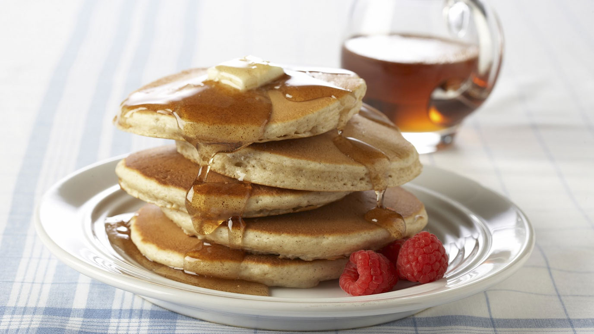

Cinnamon Pancakes

Description
My wife loves pancakes. With this twist, I added a little cinnamon.
Best served with a some butter and maple syrup or honey if you prefer.
It is fairly easy to make with simple ingredients.
As close as you can get to an 'almost' American Breakfast.
- 1 cup all purpose flour
- 2 1/2 tablespoons of white sugar
- 2 Tsp of baking powder
- 2 Tsp of ground cinnamon
- 1 Tsp of baking soda
- 1 cup of milk
- 1/4 cup of melted butter
- 2 large eggs
- 1 Tbsp of vegetable oil
- Mix flour, sugar, baking powder, cinnamon, and baking powder together in a bowl.
- Whisk milk, melted butter and eggs together in a seperate bowl.
Combine both mixtures and whisk together until blended.
- Heat oil on a griddle over medium heat. Drop batter in 1/4-cup scoops onto hot griddle.
Cook until bubbles form and edges are dry, 3 to 4 minutes. Flip and cook until browned
on the other side, 2 to 3 minutes. Remove to a plate and keeep warm while cooking the
remaining pancakes.
Return to Home